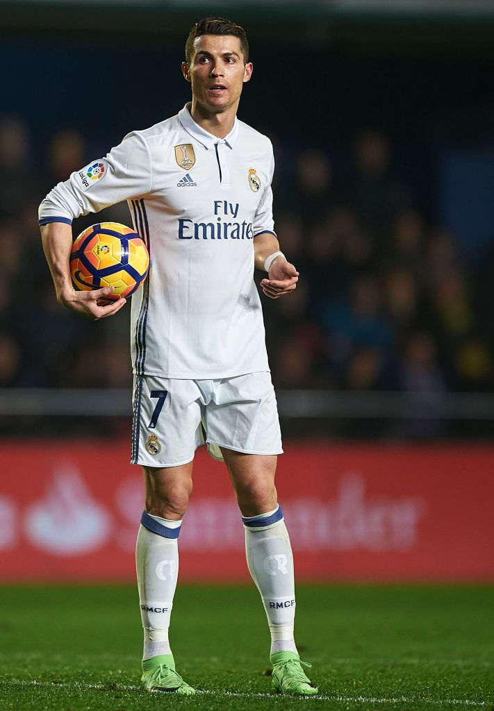
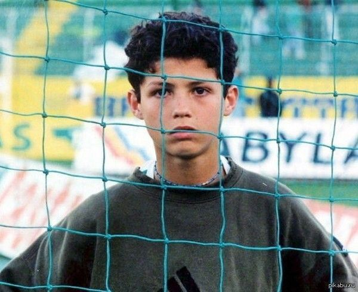
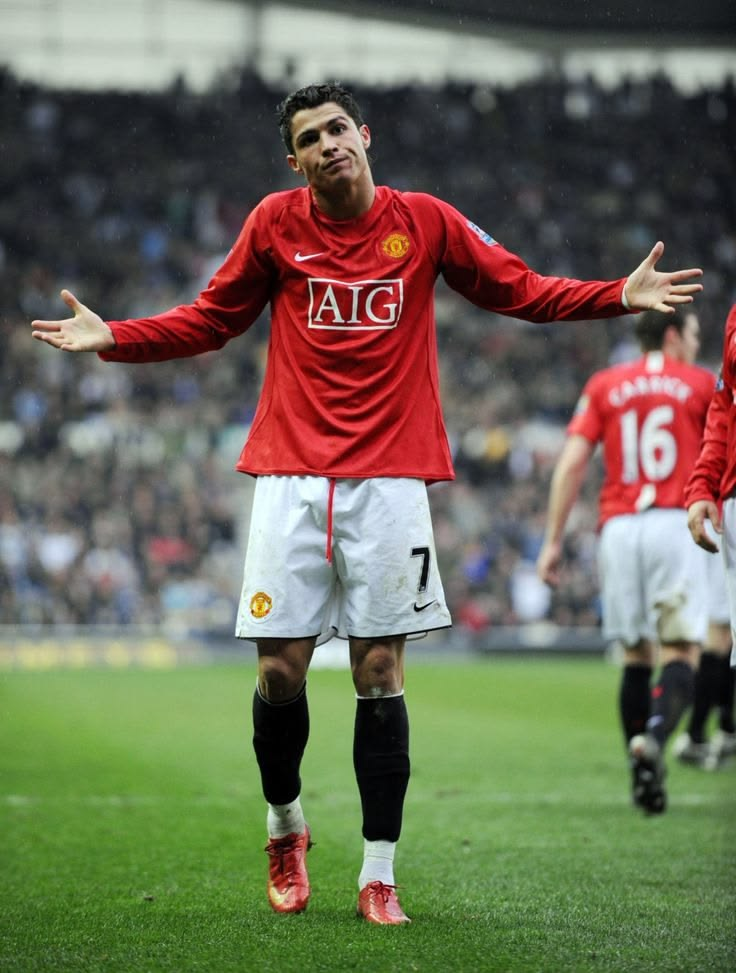
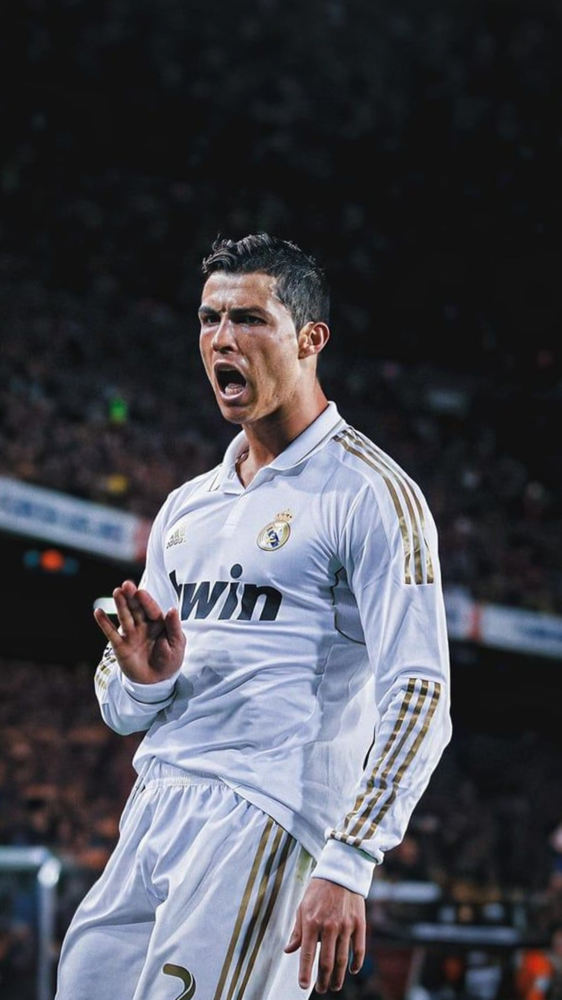
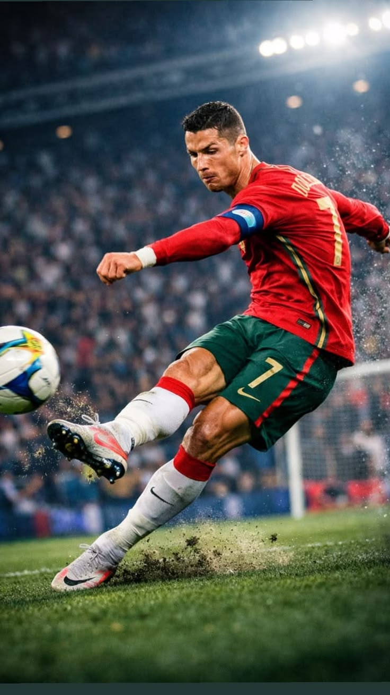

The Legend CR7
From the rocky shores of Madeira to the biggest stadiums on earth, Cristiano Ronaldo's journey is the greatest story ever told in football.

Al Nassr FC
Cristiano Ronaldo
900+
Career Goals
5
Ballon d'Or
5
UCL Titles
200+
International Caps
The Story

Born on a small island, nobody predicted a thin kid with a heart condition would redefine sporting history. Through relentless work and an unmatched mentality, he conquered England, Spain, Italy, and the world stage.
This project explores his records, his mindset, and what makes number 7 an eternal symbol of perfection in sports.
Visuals

Manchester United

Real Madrid CF

Portugal National Team
Questions